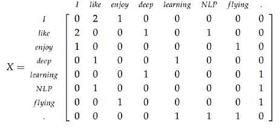
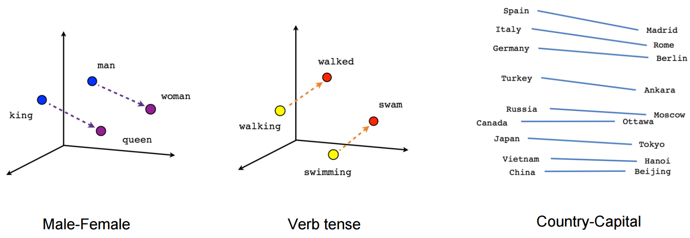

5.2 Distributed Representations
Similar words share dimensions instead of a single one-hot slot.
These notes walk through the lecture slides. The original deck is unchanged; use (slides) on the course hub if you want that PDF.
1. Why Week 4 is not enough
Basic vectorization (one-hot, BoW, n-grams, TF–IDF) shares three failures:
| Failure | What it means in a project |
|---|---|
| Discrete / atomic | film and movie are unrelated coordinates |
| Sparse, high-dimensional | Most of the vector is zero; learning and storage suffer |
| OOV | A new word has no column (fastText is a later exception) |
Distributed representations are the response: short, dense vectors whose directions encode meaning. Word2Vec (notes 5.3–5.5) is the method this course uses first.
Sources: Practical Natural Language Processing and Lane, Howard, Hapke, Natural Language Processing in Action.
2. Three terms people mix up
Distributional and distributed are not the same word.
A distributional representation comes from how a word is used. You look at the contexts it appears in. The raw object can still be huge: a row of a co-occurrence matrix, or a one-hot. Harris’s idea, in slogan form: words that occur in similar contexts mean similar things.
Example corpus: I like deep learning. I like NLP. I enjoy flying. A windowed co-occurrence matrix counts how often two words share a neighborhood:

Each row is still high-dimensional and still mostly about counts.
A distributed representation compresses that. The vector is low-dimensional (50–300 is typical) and dense (almost no zeros). Meaning is spread across the coordinates. No single index “is” the word dog.
An embedding is the map from the distributional space (or from word ids) into that dense space. “We trained embeddings” means: we learned that map.
3. What the geometry is for
If the map is good, distance and direction mean something.
Mikolov et al. showed that Word2Vec vectors support analogies:
[ \overrightarrow{\text{king}} - \overrightarrow{\text{man}} + \overrightarrow{\text{woman}} \approx \overrightarrow{\text{queen}} ]
The same kind of offset shows up for gender, verb tense, and country–capital pairs:

You are not memorizing the picture. You are taking the claim: a useful embedding turns a linguistic relation into a vector offset you can add.
Nearest neighbors of a word (cosine) become a debug tool. If Paris sits next to France and Berlin, the space learned something. If Paris sits next to random tokens, training failed or the corpus is wrong.
4. How this is learned, in one paragraph
You do not build the huge co-occurrence matrix and then factor it (that is a different family: LSA, GloVe). Word2Vec trains a small two-layer net on a fake task: predict a word from its neighbors, or the neighbors from a word. After training you throw away the softmax and keep the hidden-layer weights. Those rows are the embeddings.
CBOW (note 5.3) predicts the center from the context. Skip-gram (note 5.4) predicts the context from the center. The practical tricks that make either one scale are note 5.5.
5. What you should walk away with
- Distributional = from context. Distributed = dense and compressed.
- Embeddings are a learned map into the dense space.
- Cosine in that space is the default similarity.
- Week 4 vectors cannot do king − man + woman. These can, when training worked.
What you will type. In gensim, model.wv.most_similar("king") and model.wv.most_similar(positive=["king", "woman"], negative=["man"]) are the two checks. If the first list is junk, do not bother with the analogy. Bad neighbors mean a bad corpus, a too-small window, or too few epochs—not a bad formula.
6. Practice
-
In one sentence each, distinguish distributional representation, distributed representation, and embedding.
-
Why is a 300-dimensional Word2Vec vector less prone to the sparsity problem than a 50,000-dimensional TF–IDF vector?
-
You compute (\overrightarrow{\text{Paris}} - \overrightarrow{\text{France}} + \overrightarrow{\text{Italy}}) and the nearest word is Rome. What did the model learn?